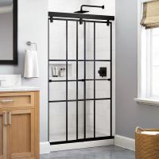

Showers
Do plan on making an investment: Baths in general cost more per square foot to renovate than other parts of the house, partly because running plumbing is pricey and making wet areas watertight, well lit, and ventilated requires a host of skills. “As with any renovation, an experienced GC can help you decide where to spend and where to save,” says architect Jerry Allan of Afton, MN, who adds that clients often come to him with photos found online and little idea of what is needed to achieve the look they are after.
Types of showers
Open and shut |
Sheets of glass create an airy feel. Hinges can be adjusted to allow doors to swing into the shower, so wet doors can drip inside the enclosure. Shown: Dreamline Unidoor Frameless Hinged Shower Door in Oil-Rubbed Bronze, $719; Kitchen & Bath Authority |
|
Spray screen |
Where space is tight, a splash guard—a panel that’s hinged or stationary—can suffice. Works best for bathers who are careful where they aim the spray. Shown: Vigo Zenith Frameless Fixed Shower Door in Black, $440; The Home Depot |
|
Wash-Down Toilet |
 | Black grids give doors an industrial edge reminiscent of factory windows. Shown: Delta Everly Frameless Mod Soft-Close Sliding Shower Door in Matte Black with Ingot Glass, $571; The Home Depot |
Bathtubs
The bathroom can be just as beautiful as any other room. A bathroom’s paint, tile, flooring, light fixtures and bathtub all come together for a well-designed, relaxing space. There are many types of bathtubs to fit many types of bathrooms.
Types of Bathtubs Materials
-
Fiberglass is a kind of reinforced plastic which is formed into layers then molded into a bathtub shape before being coated with a layer of gelcoat resin.
Pro: At very affordable prices, fiberglass tubs are good for those on a tight budget. Due to the lightweight nature of the material used, they are also easy to maneuver around a house and install, plus, any damages can be easily be repaired
-
Porcelain tubs are constructed from cast iron or stamped steel which is then coated with a layer of porcelain enamel-a material made by fusing powdered glass to a thin substrate by heating it at high temperatures, usually between 750 and 850 °C before it melts and hardens into a durable coating.
Pro: Porcelain bathtubsmaintain a very nice sheen and luster, and their surfaces are very smooth as well, maintaining an old antique aesthetic. The coating in the tubs are naturally resistant to scratching and cleaning is easy to maintain as a mild detergent or baking soda with warm water will usually knock out any tough stains in a porcelain bathtub.
-
Stone-Resin is a material used to mimic the look of natural stone.
Pro: Like with most resin, color does not fade with repeated water use, the material is non-porous meaning it does not absorb water and retains water heat very well. It has an incredibly long lifespan, lasting for quite some time without the need of constant repair and when it needs to be discarded, stone resin is 100% recyclable. Stone resin is also viewed as a more luxurious bathtub material, not to mention the material itself is quite durable and able to withstand a heavy amount of punishment. Additionally, cleaning is simple and easy. Most stains and mildew will wash away with simple warm water while lightly abrasive substances such as Comet or Ajax can be used for more stubborn residues. Stone Resin is the best bathtub material overall for the price and quality.
-
Wood is a custom made bathtub using a variety of different types of wood.

Pro: Aesthetically pleasing with a nice genuine, natural feel to it. Also, since wood is easy to work with, wooden bathtubs can be any shape or size depending on your tastes and does add a certain sense of luxury to your bath time.